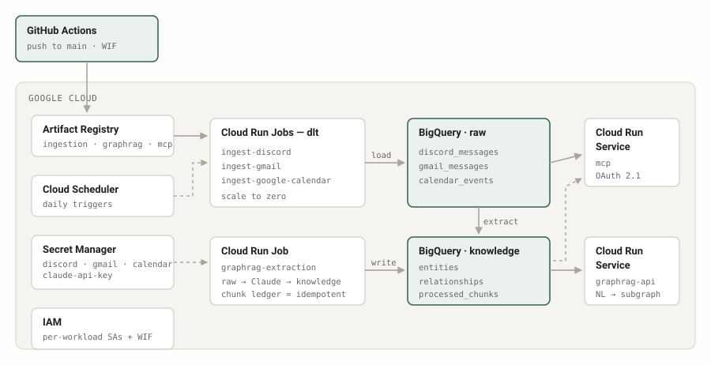

A personal data lake and knowledge graph on Google Cloud. Discord, Gmail and Google Calendar land in BigQuery; a GraphRAG layer extracts entities and relationships into a second dataset; an authenticated MCP server exposes the result to Claude. Every resource is declared in Terraform and deployed by GitHub Actions on push.
Terraform · BigQuery · Cloud Run · dlt · Secret Manager · Cloud Scheduler · Workload Identity Federation
The things I need to remember are scattered across three services that don't talk to each other, and none of them answer the question I actually have — "what have I committed to, and to whom?" Search inside each app is per-app and keyword-based. What I wanted was one queryable layer that resolves the same person across a Discord handle, a Gmail address and a calendar invite, and knows the difference between a message and an open commitment.
The harder constraint was operational. This is a personal project, so it had to cost near-zero at idle, run unattended, and be reproducible from source — if I couldn't rebuild it from an empty GCP project, it wasn't finished.

main → Actions authenticates with Workload Identity
Federation → images to Artifact Registry → terraform apply →
Cloud Run. Scheduler triggers ingestion daily; nothing runs between jobs.
Three dlt pipelines run as Cloud Run Jobs and write to BigQuery
raw. A fourth job chunks those raw tables, sends them to Claude
for entity and relationship extraction, and writes into
knowledge. Two Cloud Run Services sit on top: a query API
and an MCP server that Claude connects to over Streamable HTTP. Cloud
Scheduler drives the daily cadence; Secret Manager holds every credential;
each workload has its own service account.
| Infrastructure | 11 Terraform files covering BigQuery, Cloud Run services and jobs, Artifact Registry, IAM, Secret Manager, Cloud Scheduler, and the GCS state backend |
|---|---|
| Data | 3 sources (Discord, Gmail, Google Calendar) → BigQuery raw → knowledge (entities, relationships, processed chunks) |
| Serving | GraphRAG query API + an MCP server with OAuth 2.1, both on Cloud Run |
| Deploy | GitHub Actions with Workload Identity Federation — no long-lived service-account key exists anywhere |
| Ops | Cloud Scheduler daily; every job and service scales to zero between runs |
| History | 38 commits |
The original design called for Airbyte, which is the obvious choice and has a connector for all three sources. I rejected it because Airbyte wants always-on compute, and this pipeline is genuinely idle 23 hours a day. dlt packages the same extract-and-load as plain Python that runs as a Cloud Run Job and scales to zero. I traded a managed UI and a connector catalog for a near-zero idle bill and one less always-on thing to patch — the right trade at three sources, the wrong one at thirty.
The quick path is to generate a JSON key, paste it into GitHub secrets, and move on. That leaves a long-lived credential to GCP sitting in a third-party system with no expiry. WIF has GitHub's OIDC token exchanged for a short-lived GCP token, scoped to this repository. It cost an afternoon of IAM debugging up front and means there is no key to leak or rotate.
The first version exposed one tool per access pattern — a dozen of them.
That reads as thorough and is actually worse: every tool definition is
permanent context cost on every request, and a large flat menu makes the
model choose badly between near-identical options. Collapsing to five with a
routing argument (recall with a kind, rather than
six separate recall tools) cut the surface area and improved tool selection.
Tool count is an interface design problem, not a feature count.
Connecting the MCP server to Claude's hosted client took six commits over two
days. Two separate faults, stacked: the RFC 9728 protected-resource metadata
was advertising the wrong resource URL, so the OAuth 2.1 handshake completed
and then the client walked away; and FastMCP was rejecting the backend's
Accept header, which surfaced as a generic connection failure that
looked exactly like the auth problem. I fixed the metadata URL first, saw no
change, and assumed the fix was wrong — the header shim was the actual second
bug. Since then I read the transport layer before the application layer.
Separately, the audit job kept dying on Cloud Run until I noticed gen2 has a 512Mi floor and the job was being sized below it.
terraform plan reporting no changes against live infrastructure is
the check that matters here — it's what makes the claim "the repo is the
system" true rather than aspirational. Beyond that: a smoke script exercises
the deployed MCP server end to end over HTTP, and the extraction job writes a
processed-chunk ledger so a re-run is idempotent instead of duplicating the
graph.